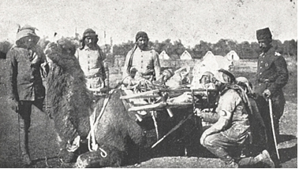

Şam’a döndükten sonra çok meşguliyetli geçen haftalarda, Hayfa konsolosumuz Dr. Loytved Hardegg bana, teşekkür borçlu olduğum büyük yardımlarda bulunmuştu. Loytved Hardegg, Şam Alman genel konsolosuna vekâlet etmek üzere sık sık Şam’a geliyordu. Henüz genç olan konsolos; enerjik, sorumluluk almayı seven, kırtasiyecilik hastalığı olmayan, memleket ile halkı iyi tanıyan bir şahıstı. Cemal Paşa, Suriye genel valiliğine tayin edildikten sonra konsolos onunla iyi geçinmesini bilmiş ve çok zorlu bir kişi olan Paşa’ya maharetiyle yaklaşarak bizimle müttefikimiz arasında iyi münasebetler kurup yürütmekte büyük hizmetler görmüştü. Onun 1917 senesinde birdenbire tutulduğu ağır bir hastalıktan dolayı vakitsiz ölümü, gerek Almanlık ve gerekse şahsen benim için çok üzücü bir kayıptı.
Dr. Loytved Hardegg bana, Würtenberg[6] Krallığı memurlarından inşaat mühendisi Gottlieb Schumacher’i tanıştırmıştı. Enerjisi ve yöresel durum ve şartlara dair olan esaslı bilgisi sayesinde, gerek çölde gerekse çöl sınırlarında yapılan harekâtta su tedariki hususunda hiçbir zaman ciddi zorluklarla karşılaşmamamızı borçlu olduğumuz kişiydi.
Schumacher, 1857 senesinde Kuzey Amerika’da doğmuştu. Henüz on iki yaşında iken Templer Ruhban Cemiyeti’nin bir üyesi olarak Hayfa’ya gelmişti. Bundan sonra Stuttgard’da yüksek teknik okulunda mühendislik ve mimarlık tahsil etmiş ve tahsilini tamamladıktan sonra mimar olarak Hayfa’ya gelmişti. Doğu Ürdün bölgesinde yaptığı haritacılıkla ilgili ölçümler ve çalışmalarla isim yapmış ve bundan başka sonradan meşhur Lord Kitchener olacak olan genç İngiliz subayına Filistin’de harita çıkarırken refakat etmişti. Daha sonraları Schumacher, çeşitli arkeolojik kazılara da katılmıştı. O, memleketi mükemmel tanıyan Arap diline hâkim olan ve yerli müteahhit ve işçilerle münasebette çok büyük bir tecrübesi ve vukufu olan bir kişiydi. Schumacher, ordu hizmetine girmeye ve yerlilerin yahut memlekette oturan yerli Alman müteahhitlerinin yardımıyla hudut ve yığınak mıntıkalarında su üsleri kurmak için gereken tedbirleri almaya hazır olduğunu bildirmişti.
Süveyş Kanalı yoluna döşenen su boruları.
Buralarda mevcut kuyuların temizlenmesi ve derinleştirilmesi, yeni kuyuların açılması ve suyun çekilmesine mahsus tesisatın ıslahı ve tesisat için mümkün olduğu kadar çok miktarda büyük su hazinelerinin inşası gibi yapılacak işler vardı. Ayrıca suyu bol olan kuyulara motorla işleyen tulumbalar konacak ve suların kirlenmemesi için de su alınan yerlerin üzerleri kapatılacaktı.
Keşif seyahatimiz esnasında elde ettiğim tecrübeler, çöle götürülecek arabaların mümkün olduğu kadar en az sayıya indirilmesi gerektiği hakkındaki düşüncemi doğrulamıştı. Cephane kollarında, ağırlıklarda, nakliye kolu ve trenlerde, sıhhiye teşkilatı vesairede bulunan arabaların yerine develer verilecek, nakil aracı olarak yalnızca toplarla tombazların arabaları birlikte götürülecekti. Bundan dolayı ilk yapılacak iş, Kanal seferine katılacak birliklerin ağırlıklarını genel olarak hesap edip deveye olan ihtiyaçlarını tespit etmek ve bundan sonra develeri tedarik edip donatarak birliklere vermek veyahut ta bunları askerî nakliye kolları hâlinde organize etmekti.
Biz deve ihtiyacını aşağı yukarı 30 bin olarak tespit etmiştik. Sayının bu kadar büyük olması, birçoğu iyi beslenmemiş olan hayvanlara uzun müddet için 120 kilodan fazla yük konulamayacağındandı. Develerin teslimi işi büyük arazi sahipleriyle deve tacirlerine ihale edildi. Her bir deve için en yüksek fiyat olan on altın Türk lirası tespit edilmişti. Türk komutanlığında bu iş için gerekli olan tahsisat mevcut değildi; bunun için bu paralar emrimdeki Alman örtülü ödeneğinden ödenecekti.
Menzil teşkilâtındaki deve kolları, göreceği işlere göre ya yüz veyahut da iki yüz deveden ibaret olacaktı. Bu deve kolları için komutanlarla sürücüler tayin edilmesi gerekiyordu. Komutanlar atlı olacaklardı. Siyasî sebeplerden dolayı sivil hükümet daireleri, asker toplama ve harp vergisi ile malzeme tedarikinde, memleketin müdafaası uğrunda gerekli olan şiddeti göstermekten ve halka daha fazla baskı yapmaktan kaçınmışlardı. Deve kollarına gereği kadar sivil deveci ve kol komutanlarına da atlı nezaretçi ve emir atlıları verilmemiş olmasının bedeli harekât esnasında çok acı bir şekilde görüldü.
Gereği kadar deve semeri, yular, ip ve su fıçılarının tedariki de çok zor ve zaman kaybettiren bir iş olmuştu.
Sanayii olmayan, yol şebekesi bulunmayan bir memlekette ordu ihtiyacı için şu veya bu malzemenin tedarik ve teminindeki zorlukları, sanayii gelişmiş, yol ve demiryolları şebekeleri modernleşmiş biz Avrupalılar için tasavvur etmek çok güçtür.
Çölde yapılan nakliyatta yerliler, su taşımak için sığır ve keçi derilerinden yapılmış tulumlar kullanmaktadırlar. Ancak yeni imal edilmiş olan tulumların suyu kokutmaması ve bulandırmaması için uzun zaman bekletilmesi lâzımdır. Memleket içinden tedarik edilen veyahut ordu ihtiyacı için imal ettirilen bu tulumlar, suyu nakletmek için muhtaç olduğumuz araçların çok az bir kısmını oluşturuyordu. Bunun için petrol nakliyatında kullanılan ve memleket dâhilinde çok sayıda bulunan tenekelerden istifade ederek bu işe bir çare bulmak imkânı hâsıl olmuştu. Bu tenekeler için de her biri dörder teneke alacak ağaçtan kasalar yaptırmıştık. Devenin sağ ve sol yanlarına bu kasalardan birer tane yükletilerek her biri on altı litre su alan tenekelerle her bir deve ile 128 litre su taşınması teorik olarak mümkün görünmüş oluyordu. Pratikte ise bu miktar çok daha aşağı olmuştu; çünkü tenekeler ya sızıntı yapmış veya iyi doldurulmamış veyahut da iyi kapatılmadığından suları akmıştı. Bütün seferi kuvvetlerin iki günlük su ihtiyacını develerle taşımak istediğimizden su kabına olan ihtiyacımız son derece artmıştı.
Büro işlerinde karargâh subaylarından candan yardımlar görmüştüm. Tahsillerinin derecelerine göre bu subayların tamamı yükümü azaltmak için ciddî gayretler sarfetmişlerdi. Fakat tarafımdan hazırlanan nizanname, talimatname ve emirlerin Türkçeye çevrilmesi basit bir iş değildi. Bu hususta Ekrem Bey’e olan sonsuz güvenime ve bizzat kolordu komutanının tercümeleri şahsen kontrol etmesine rağmen; yazılarımdaki maksat ve fikirlerin Türkçe tercümelerde tamamen ifade edilip edilmediğini kontrol edecek bir konumda olmamak, benim için çok büyük bir dert ve sıkıntı olmuştu.
Diğer önemli bir zorluk da, bizim dilimizdeki kısa ve kesin emir tarzımızın doğuluya bir kamçı tesiri yapması ve onlar tarafından bu lisan tarzının kaba bir nezaketsizlik ve hakaret olarak algılanması olmuştu. Bundan dolayı mütercim, biz Almanlar tarafından kaleme alınmış emir ve yazıları kelime kelime çevirmekten kaçınarak, doğulu mantalitesine uygun bir şekle sokmak mecburiyetinde kalmıştır. General von Falkenhayn, Filistin cephesinin komutanlığını üstlendiği zaman bu meseleyi hiç ciddiye almamış ve emirlerini, Berlin Şark Dilleri Öğretmen Okullarında Türk dilini öğrenmiş olan Almanlara tercüme ettirmiş olmasından dolayı, Almanya’daki şöhretini kendi komutası altında bulunan Türk birliklerinde koruyamamıştı.
Deve kolları teşkilatında birçok Alman subayından yardım görmüştüm. Bu subaylar Afganistan’a gönderilmek üzere hazırlanan Alman seferî heyetiyle birlikte Halep’e gelmişler ve bu heyetten ayrıldıktan sonra, İstanbul’daki elçiliğin ataşemiliteri bana sormadan bunları Şam’a göndermişti. Bu subayların birkaçı benim için çok kıymetli mesai arkadaşı olmuş ise de, diğerleri yabancı memleketlerde istihdama elverişli olmadıklarını göstermişlerdi. Bunlardan birinci grupta Dr. Yüzbaşı Jungels bulunuyordu. Tecrübe sahibi, eski bir Afrikalı olan bu zat, Kanal harekâtının sıhhiye hizmetleri teşkilatında benim için eşi bulunmaz bir mesai arkadaşı olmuştu. Çölde hasta olanlarla yaralananların nakli meselesinin çözülmesi gerekiyordu. Bu mesele için birçok usul denendikten sonra nihayet “kakule” denilen tertibattan faydalanmaya karar vermiştik.

Çölde deve üstünde yaralı taşımaya yarayan “kakule” denilen tertibat.
Kakule, hacca giderlerken Müslüman kadınlarının kullandıkları sepetten yapılmış bir çeşit sedyelerdi. Özellikle kuvvetlilerden seçilmiş olan develerin her iki tarafına bu sedyelerden birer tane konuluyordu. Bu nakil aracını tecrübe etmek için bizzat kendim kakule içinde uzun bir yol yaptım. Kakuleden indiğim vakit, sallantılı ve güvenli olmayan bu nakil aracında nakledilmek mecburiyetinin nasip olmaması için kalpten dua etmiştim. Fakat çöldeki harekât sırasında bu çeşit hasta nakil araçları çok iyi hizmetler görmüş ve yaralılar bunların içinde birkaç günlük yolculuğa tahammül edebilmişlerdi.
Yüz metre genişliğinde olan Süveyş Kanalı’nın etkili ve devamlı bir şekilde nasıl kapatılabileceği meselesiyle de çok esaslı bir surette meşgul oluyorduk. Kanal şirketinin, kanalı kapatacak her çeşit engelin çabucak bertaraf edilmesini sağlayacak mükemmel vasıtalarla donatılmış olduğunu biliyorduk. Kanalın her iki sahili kumla şevlendirilmiş olduğundan patlayıcı kullanmakla bir sonuç alınamazdı. Kanal’da gemilerin geçtiği yolu kapatmak için en etkili araç olan çimento yüklü bir geminin batırılması, maalesef bulunduğumuz şartlar altında bizim için mümkün olamazdı. Bundan dolayı kum torbalarıyla kanalın genişliği istikametinde bir set inşa etmeye karar vermiştik. Kanal şirketinin tarak makinelerinin kepçe vesairesine kum torbalarının bezleri takılarak onları hareketsiz bırakacak ve böylece kum torbalarından yapılmış bir seddi ayıklamak için uzun bir zaman ve emek sarfedileceği ümit ediliyordu.
İlk deve kolları kurulur kurulmaz, Gazze, Bîrüssebi ve Maan yığınak mıntıkalarında erzak ve cephane depoları tesis edilmeye ve doldurulmaya başlandı. Sivil hayatında nakliyatçı olmasından dolayı bu işe özellikle elverişli olduğu anlaşılan Alman Yüzbaşı Lindemann’ı Sille’ye gönderdim ve yapılan işlerin doğru olup olmadığını teftiş ettirdim. Orada zamanla düzenin kurulmasını ve bu mevkie gelen askerî eşya ve malzemenin derhal boşaltılıp gideceği mahallere sevk ve nakledilebilmesini, Lindemann’ın teşkilâtçılıktaki maharetine ve bitmek bilmeyen azmine borçluyuz.
170 kilometre uzunluğundaki Sille–Bîrüssebi yolunu geçebilmek için bir deve kolu sekiz gün yürümeye mecburdur. Bu yolculuk süresinde deve kolu taşıdığı yükün önemli bir kısmını kendisi tüketirdi. Bundan kaçınmak için öncelikle nakil ve menzil yolları üzerinde, gelip geçen birliklerle kolların ihtiyacını karşılayacak depolar kurulması ve bunların doldurulması gerekiyordu. İşte bundan dolayı, çölde bulunduğumuz sırada bizi besleyecek olan ambarların doldurulması çok yavaş ilerliyordu.
Kanal’a karşı yapacağımız hareketin, 1914 senesi içinde başarılamayacağı gerçeğine bir an önce benim de alışmam gerekiyordu. Siyasî düşünceleri tarafımızdan bilinen Türk askerleriyle siyaset adamlarının büyük bir kısmının, Talat ile Enver’i düşürerek Türkiye’nin ittifak andlaşmasıyla Merkezî Devletler’e karşı olan taahhütlerini tanımayacak bir hükümet kurmaları ihtimalinin tarafımızdan daima hesaba katılması lâzımdı. Bundan dolayı Türklerle İngilizler arasında mümkün olduğu kadar çabuk kan dökülmesi bizim menfaatimiz gereğiydi. Biz ancak İngilizlere karşı kazanılacak bir zaferin şerefi veyahut mağlubiyetin intikamı alındıktan sonra Türkiye’nin ittifaka ola sadakatine güvenebileceğimize inanıyorduk.
Keşif seyahatim sırasında küçücük haritamızda gösterilmiş olan ve toplanma mahalli olarak seçilmiş olan Bîrüssebi kasabasına giden Halilürrahman–Bîrüssebi şosesini hayvan üzerinde kat etmek fırsatını bulmuştum. Kasım ayı ortalarında Fritz Frank isminde bir kişi benimle görüşmek istemişti. Bu adam girişken ruhlu, Filistinli bir Almandı. Vatanına olan sevgisi bu adamda kendi hesabına iki Bedevînin refakatinde Süveyş Kanalı’na bir hücum yapmak arzusu uyandırmıştı. O her ne kadar Kanal’a ulaşamamışsa da Tih Çölü’nün iç taraflarının karakteri hakkında bana çok kıymetli bilgiler vermişti. Onun bana gelmesine sebep, yakında çöle yapacağım bir seyahatte kendisine, ihtiyacım olup olmadığını anlamaktı. Bu görüşme sırasında kendisine topçumuzu Kudüs’ten Halilürrahman’a ve oradan da Bîrüssebi’ye yürütmek niyetinde olduğumu söylediğim zaman, Frank bana Yuda Dağlarında, Halilürrahman ile Bîrüssebi arasında nakil araçlarının geçebileceği hiçbir yol bulunmadığını ve mevcut yolların yalnız patikalardan ibaret olduğunu söylemişti. İyi nasihatin pahalıya mal olduğu kabilinden benim için de, derhal Halilürrahman’dan Bîrüssebi’ye iyi bir şose yolu açılması hakkında Kudüs Menzil Müfettişliği’ne emir vermekten başka çarem kalmamıştı. Bu hâl doğal olarak Kanal’a karşı yapacağımız hareketin ikinci defa ertelenmesine sebep oluyordu. Fritz Frank bir Alman muhbiriydi ve “F. F.” rumuzu ile savaş sırasında düşmanlarımızın hayalinde ve daha çok savaştan sonra yayınlanan İngiliz edebiyatında büyük bir rol oynamıştır. O, sürekli şekilden şekile girerek İngiliz hatlarının gerilerinde dolaşmış ve bir İngiliz subayı üniformasını taşıyarak İngiliz subay çevrelerinde düşüp kalkmış ve daha buna benzer birçok şeyler yapmış imiş! Bu şayiaların hepsinde ve hatta bu şayialardan yola çıkılarak; Frank’ın savaştan sonra Filistin’e döndüğü ve oradaki İngiliz haber alma servisinde kendisine görev teklif edilmiş olduğu rivayetlerinde gerçeğe yakın hiçbir söz yoktur.
Fritz Frank muhbir olarak bize çok iyi hizmetler yapmış ve bilhassa bana çölün topoğrafik durumu hakkında çok kıymetli raporlar vermişti. Fakat casus olarak hiçbir zaman çalışmadığı gibi aslında bir tek kelime bile İngilizce konuşamadığından casus olarak kullanılması kesinlikle elverişli olamazdı. Maalesef biz, bütün savaş boyunca işe yarar bir haber alma servisi kurmaya muvaffak olamamıştık; hâlbuki İngilizler memlekette oturan Türk düşmanı unsurlar aracılığıyla büyük ölçüde bilgi toplayabilmişlerdi. Askerî bakımdan bu bilgiler daima işe yaramış değildi. Nitekim İngilizlerin bizim kuvvetlerimiz hakkında elde ettikleri bilgilerin çoğunlukla yanlış olduğu meydana çıkmış bulunmaktadır.
1914 senesi Kasım ayı sonlarına doğru kolordu komutanı ile birlikte ileri yürüyüş ve menzil yollarımızın teftişi için yaptığımız bir seyahatte, Halilürrahman–Bîrüssebi şosesi inşaatının daha hâlâ başlamadığını görmüştük. Buna güya amelelerin iaşe meselesinin henüz halledilmemesinden dolayı başlanmadığı sebep olarak gösterilmişse de kolordu komutanı bu meseleyi birkaç dakika içinde halledivermişti. Her halde üst makamı rahatsız etmek korkusundan olacak ki, doğulunun bir emrin yerine getirilmesinde kendi başına üstesinden gelemeyeceği zorluklarla karşılaştığı vakit bunlardan amirini haberdar etmemek gibi kötü bir alışkanlığı vardır. Hâlbuki hiçbir şey bizim için işleri bunun kadar güçleştirmiyordu.
Kısa süren bu teftiş seyahatinden geri dönüşümde şu kanaate vardım ki, Alman örf ve adetlerine göre hazırlanmış bu güzel talimat ve emirlerin hepsi boşa sarfedilmiş bir emekten başka bir şey değildi. Bunlar ya ait oldukları kimselerin eline geçmemiş veya herhangi bir masanın üzerinde takılmış kalmış veyahut da ilgili kimseler tarafından anlaşılamamıştı. Bu gibi işlerde yazılı talimatın yerine şahsî açıklama ve kontrolün geçmesi lâzımdı. Bundan dolayı işlerin durumunu anlayabilmek için kolordu komutanı ile benim şahsen daha fazla dolaşmamız gerekiyordu.
Kasım ayı sonunda yağmur mevsimi başlamıştı. Fırtınalı havalar, bulutlardan boşanan yağmurlar günlerce devam etmişti. Şam–Sille demiryolu, küçük köprülerin yıkılması, dolguların akan seller tarafından sürüklenip götürülmesi sonucu onbeş gün müddetle kullanılamamıştı. Kudüs–Nablus yolunda seller muhtelif yerlerde ve kilometrelerce uzakta yolun üst tabakasını alıp götürmüştü. Buradaki şose, karların erimesi mevsiminde dağlardaki bir derenin yatağının aldığı şekle girmişti. Şam ile Maan arasında cephane ve erzak nakliyatı durduruldu.
Fırtınanın yaptığı tahribattan dolayı nakliyenin durdurulmuş olduğu ordu komutanlığına hemen haber verilmemişti. Bundan dolayı orduya ait malların gönderilmesi zamanında durdurulamamış, birçok küçük istasyon tıka basa dolmuş ve büyük miktarda erzak açıkta kalarak mahvolmuştu. Cephenin iaşesi bakımından son derece vahim olan bu demiryolu nakliyesindeki kesinti her sene yağmur mevsiminde tekrarlanıyordu.
Türkiye en sonunda 3 Kasım 1914’te savaşa girmişti. Bu hadise Türk Hükümeti için hiçbir şekilde bir sürpriz olmamakla beraber, bu ortamda Suriye ile Filistin’de yaşayan İtilâf Devletleri uyruğunda olan birçok kimse hakkında uygulanacak muameleye dair hiçbir emir ve karar alınmamıştı. Bunun yanı sıra savaş ilanından sonra Başkomutanlığın bize verdiği emirlerle sivil hükümet dairelerinin Dâhiliye Nezareti’nden aldığı emir ve talimatlar birbiriyle çelişiyordu. Türkiye savaşın başlaması üzerine kapitülasyonların kaldırıldığını kendi hesabına ilan etmişti. Fakat Türk memurları uzun senelerden beri yabancı devlet konsoloslarına karşı göstermeye alıştıkları saygılı davranıştan kendilerini kurtarmaya muvaffak olamamışlardı. Bu işte belki şakırdayan altınların da tesiri olmuştu. Hükümet memurları düşman devlet vatandaşlarına karşı, savaşta millî müdafaa menfaatlerinin gerektirdiği enerji ve şiddetle harekete geçmeyi bir türlü kabul edememişler ve bu da askerlerle sivil memurlar arasında çok ciddî fikir anlaşmazlıklara sebep olmuş ve sonucunda askerlerin idareyi ellerine almalarını gerektirmişti. Bu sırada bu işler için yetişmemiş olan askerî unsurların birçok yanlış hareketler ve beceriksizlikler yapmış olmalarına hayret etmemek gerekir.
Türkiye’nin savaşa girmesi üzerine İngiliz savaş gemileri, açık bir mevki olup yalnız yirmi jandarma tarafından tutulan Akabe’yi bombardıman etmişlerdi. Düşmanlarımızın devletler hukuku hükümlerine aykırı olan bu hareketleri, İngilizlerin Suriye ve Filistin sahillerindeki açık şehirleri bombardıman etmek niyetinde oldukları şayiasını ortaya çıkarmıştı. Halkı, endişe veren bir panik havası kaplamıştı. Bunun üzerine Zeki Paşa’ya, düşman devletler konsoloslarını toplayarak kendilerine açık şehirlerin bombardımanı sonucunda ölecek her bir Türk vatandaşına karşılık kendilerinden üç kişinin kurşuna dizileceğini ve meydana gelecek maddî zararların da düşman devletler vatandaşlarına ait mal ve mülklerle tazmin edileceğini söylemesini teklif etmiştim ve Paşa da bu teklifimi kabul etmişti. Bununla beraber Türk Hükümeti de açık şehirlerin bombardımanı sonucunda Hristiyanlara yapılacak bir katliamın sorumluluğunu kesinlikle kabul edemeyeceğini bildirmişti.
Bu beyanat ve açıklama üzerine Fransız başkonsolosunun aldığı vaziyet, açık şehirlerin bombardımanının gerçekten düşünülmüş olduğunu hissettirmişti. Zira bu olaydan sonra konsolos büyük bir sinirlilik içinde tehlikenin gecikmiş olduğunu beyan ederek, kendisiyle Suriye sahillerinde dolaşan İtilaf Devletleri filosunun amirali arasında bağlantı sağlanmasını rica etmişti. Zeki Paşa ile Albay Cemal konsolosun bu işi şahsen yapmasını reddetmiş ve beni bu beyanatta bulunmaya memur etmişlerdi. Fransızca olan söylevimde “chaque sujet Ottoman, tué par le bombardement” diyeceğim yerde “chaque sujet Musulman” sözünü kullanmıştım. Bu olay üzerine daha o günün akşamı Şam’daki Hristiyan mahallesinde bariz bir heyecan uyanmıştı ki, buna da sebep konsolosların, “Alman subaylarının Hristiyan-ların katliamını organize ettikleri ve Türk hükümetinin korumasının yalnız Müslümanları kapsadığı, Hristiyanların bundan istifade edemeyecekleri” propagandasını ortaya yaymış olmalarıydı.
Kasım ayı ortalarına doğru Şam’a gelen bir haberde, Zeki Paşa’nın Padişahın temsilcisi olarak Alman İmparatorunun refakatine verildiği ve yerine de Bahriye Nazırı Cemal Paşa’nın 4. Ordu Komutanı ve Kilikya, Suriye, Filistin ve Hicaz mıntıkaları genel valisi olarak tayin edilmiş olduğu bildiriliyordu. Ben kendi şahsıma bu değişmeyi çok uygun bulmuştum; çünkü çok enerjik bir zat olmakla tanınan Cemal Paşa’nın iş başında bulunan partinin en nüfuzlu önderlerinden biri olduğuna ve burada çözülmesi gereken sorunlara Zeki Paşa ile kıyas edilemeyecek derecede çok daha elverişli olduğuna ve Cemal Paşa’nın sivil hükümet dairelerinin pasif direnişini kırarak harekâtımız için yapılacak hazırlıkları zinde bir duruma sokacağına inanıyordum. Buna karşılık Türk subayları, Cemal’in en büyük üstleri olarak tayin edilmiş olmasından son derece ümitsizliğe düşmüşlerdi.
Kolordu komutanım da Cemal Paşa’nın askerî bilgi ve mazisi itibarıyla bir ordunun sevk ve idaresine elverişli olamayacağından ve buraya yeni fikirlerle gelerek hazırlıklarımızı altüst edeceğinden ve böylece harekâtımızı yeniden geciktireceğinden korkuyordu. Türk subaylarından pek çok defa, Enver’in kendisi için rahatsızlık verici ve gereğinde tehlikeli olabilecek olan bir rakipten kurtulmak için Cemal’i hükümet merkezinden uzaklaştırdığını işitmiştim.
8 Ocak 1915’te Cemal Paşa büyük karargâhıyla Şam’a geldi. Karşılama töreni taç giyen bir krala lâyık şekilde yapılmıştı. Cemal, Şam’ı gezmek için o kadar acele etmemişti. Bu süre içinde kendisinin yeni emir ve komuta sahasındaki hâl ve şartlar hakkında esaslı bilgi topladığı şüphesizdir. Daha o vakit iki valinin değiştirilmesini istediği ve arzusunun kabul edildiği rivayet olunmaktadır.
Ahmet Cemal Paşa, 1872 senesinde Midilli’de İstanbullu bir subayın oğlu olarak dünyaya gelmişti. O, 1892’de teğmen ve 1896’da Harp Akademisi’ni bitirerek kurmay yüzbaşı olmuştu. Bu rütbede iken önce Kırklareli ve Edirne müstahkem mevkilerinde bulundu ve 1898’de kolağası rütbesiyle Makedonya’da ihtilal hareketi önderleriyle münasebet kurmuş ve üye olarak İttihat ve Terakki Merkez Komitesi’ne girmişti. Yarbay olarak 31 Mart Vakası’nın bastırılmasına katılmış ve 1909 senesinin ilkbaharında İstanbul civarındaki Üsküdar Muhafızlığı’na tayin edilmişti. Aynı senenin Ağustos ayında Adana Valiliği’ne tayin olunarak orada meydana gelen Ermeni isyanından ileri gelen karışıklığı halletmekle görevlendirilmişti. Cemal’in bu vazifeyi büyük bir dürüstlük, siyasî beceririlik ve aynı zamanda büyük bir şiddetle yerine getirdiği anlaşılmaktadır. 1911 senesinde Cemal vali olarak Bağdat’a tayin edilmişti. Adana ve bilhassa Bağdat’taki faaliyeti kendisine, Osmanlı İmparatorluğu’nun devamı konusunda ırk ve milliyet meselelerinin çok büyük ehemmiyeti olduğunu öğrenmek fırsatını vermişti.
İstanbul’da Mareşal Gazi Muhtar Paşa kabinesi işbaşına geldiği vakit Cemal, Bağdat valiliğinden ayrılmıştı. 1912 Eylül’ünde İstanbul’a gelmiş ve kendisine Konya ihtiyat tümeni komutanlığı verilmişti. Cemal, bu tümenin başında iken albaylığa terfi etti ve tümeniyle Birinci Balkan Savaşı’nda Bulgarlara karşı yapılan muharebelere katıldı. 1913 senesinde Mahmut Şevket Paşa hükümeti eline aldığı vakit o, askerî vali olarak İstanbul’a çağrılmıştı. İkinci Balkan Savaşı’nın sonunda Nafia Nezareti’ni üstlenmişse de kısa bir müddet sonra bu görevi Bahriye Nazırlığı ile değiştirmişti. 2 Ağustos 1914 tarihinde seferberlik ilan edildiği vakit Cemal, Bahriye Nazırlığı’na ilave olarak İstanbul civarında toplanan 2. Ordu Komutanlığı’nı da üstlenmişti. 4. Ordu Komutanlığı’na tayin olunduğunda da Cemal, Bahriye Nazırlığını muhafaza etmişti.
Cemal Paşa Şam’a geldiğinde kendisine bir rapor sunulmuştu. Bu raporda, harekât planımız ve şimdiye kadar bu konuda alınan ve alınması kararlaştırılan tedbirlerle bunları gerektiren sebepler esaslı bir şekilde izah edilmişti. Daha ertesi günü Cemal, kolordu komutanı ile beni yanına çağırtmış ve raporu esaslı bir şekilde incelediğini ve bunda belirtilen fikir ve temennileri tamamen anladığını bildirerek düzgün bir bir Fransızca ile –Cemal Almanca konuşmuyordu– yapılmış işler için bize teşekkür etmiş ve fikrimize katıldığını ve alınan tedbirlerin çok uygun olduğunu söylemişti. Bu şekilde her konuda ordu komutanıyla mutabakat sağlanmıştı.
Cemal keskin zekâlı, çabuk kavrama kabiliyetli, sağlam muhakemeli bir kişiydi. Kuvvetli bir irade ile kayıtsız ve şartsız ve hatta bazen kaba bir enerji Paşa’nın şahsında birleşmişti. O, vatanını çok iyi tanıyor ve ona en büyük sevgiyle bağlı bulunuyordu. Genç Türk hükümetinin geleceğine olan kuvvetli imanı yanında, vatandaşları ile bu rejimin hata ve zaaflarını tamamen idrak eden bir kişiydi. Bu akıllı adamda dikkati çekecek derecede büyük bir gurur oluşmuştu. Bu gurur, yalnız kalabalık bir halk kütlesinin yanında iken değil, dar çevrelerdeki temaslarında bile bu kendini beğenme hâli fazlasıyla göze çarpıyordu. Bu sebepten her kim Paşa’nın dostluğunu ve teveccühünü kazanmak isterse, onun bu şahsî gururunu incitebilecek her şeyden sakınması gerekirdi.
Modern bir kültür adamıyla eski Türk despotunun acayip bir karışımı olan Cemal, mizaç ve keyfine göre ya sert, zalim ve kaba veyahut da lütufkâr, cömert ve nazik; hâkim ve inatçı veyahut yumuşak ve duygulu ve yabancı tesirler altında kalmaya müsaitti. Yüksek ve çok tesirli hitabetinden dolayı Cemal isterse son derece zarif ve nazik olabilirdi.
Üstüm bulunduğu üç sene içinde aramızda meydana gelen çok çetin ve ciddî anlaşmazlıklara rağmen Cemal’i cidden çok takdir etmiş ve kendisine büyük saygı beslemişimdir. Bu anlaşmazlıkları, daima onun en yakın çevresinden kendisine Alman düşmanlığı hakkında yapılan yönlendirmelere vermek lâzımdır. Şahsî görüşmeler için fırsat düştüğü müddetçe onunla anlaşamadığımız hiçbir mesele hatırlayamıyorum.
Alman çevrelerinde Cemal, İtilaf Devletleri yanlısı olarak tanınıyordu. Bu yanlış anlayış onun –Türkler açısından gayet haklı olan– Türkiye’nin savaşa vaktinden önce girmesinin önüne geçmek için sarfetmiş olduğu gayretlerden ve özellikle bazı vatandaşlarımızın kendi uzmanlık alanlarındaki yetersizliklerinden dolayı Cemal’in gözünde lâyık oldukları kötü muameleyi görmelerinden veyahut da nişanla mükâfatlandırılmak konusundaki hırslarının, liyakatsiz olmaları yüzünden Cemal tarafından tatmin edilmemesi neticesinde yaptıkları budalaca gevezeliklerinden ileri gelmiştir. Biz, savaşın devam ettiği uzun seneler sırasında çok uzakta olan cephemizde birdenbire önümüze çıkan bütün vatandaşlarımızla ne yazık ki iftihar edemezdik.
Bütün Türk önderleri gibi Cemal Paşa da ne Almanların ne de İtilaf Devletleri’nin dostuydu, o sadece bir Türk’tü. Bu Türk, vatanını öyle derin ve ateşli bir duygu ile severdi ki, onun en şiddetli arzusu ve biricik hedefi vatanına tam bir bağımsızlık sağlamak ve milletler camiasında onun şanlı tarihine lâyık mevkiini yeniden elde ettirmekti. O, kendi siyasî istikametinin tayininde hislerinin veya parti programına sıkı bir bağlılığın veyahut da sempati ve antipatilerinin etkisi altında kalmayan, sadece vatanının menfaatlerini göz önünde bulunduran gerçek bir politikacıydı ve şüphesiz Osmanlı Devleti’nin selâmeti gereği bugün bu devletle, yarın öbür devletle andlaşma imza edecekti. O memleketi için en doğru siyasetin Merkezî Devletler’e katılmakta olduğuna bir defa kanaat getirdikten sonra –ki bunun için bana bizzat itiraf ettiği üzere çok mücadele etmek mecburiyetinde kamıştır– artık bu ittifaka sadık kalmıştı.
Bu açıklamalar, Cemal’in Fransızlara meyyal olduğu gerçeğini değiştiremez. O, Fransızca konuşuyor ve Fransız edebiyatını tanıyordu. Ona romanların yumuşak, nazik tarzı; bizim kaba, maddî ve uyum sağlamaya daha az kabiliyetli tarzımızdan daha sevimli geliyordu. Bundan başka 1914 senesi ilkbaharında Fransız donanmasının manevralarına davet edildiği vakit kendisine bu münasebetle gösterilen saygı ve itibar da etkisini kaybetmemişti. Bununla beraber o, iki büyük oğlunun da terbiyesini bir Alman mürebbiyesine bırakmıştı.
Askerî iktidarını ve komutanlık meziyetlerini ispat etmek için Cemal, Dünya Savaşı sırasında çok az fırsat bulabilmişti. Onun yaptığı görevler birinci derecede idare ve teşkilat sahasındadır ki, bunlarda cidden büyük başarılar göstermişti. Fırsat düştükçe birliklerin sevk ve idaresi hususunda yapmış olduğu müdahaleler daima olumlu sonuçlar vermemişti. Ancak biz Alman subaylarının; Alman birlikleriyle değil, doğrudan doğruya Türk birlikleriyle iş görmek mecburiyetinde olduğumuzu unuttuğumuz zamanlarda, Türk birlikleriyle onların üst rütbedeki komutanlarının talim ve terbiye derecelerini doğru olarak tanıyıp takdir eden Cemal’in bu konuda yaptığı müdahaleler onun hesaba katılması gereken hizmetlerindendir. Üçüncü Gazze Muharebesi sırasında Cemal bu nüfuzunu kullanabilecek bir durumda olsaydı, belki bu muharebenin seyri başka bir şekil alırdı.
Şan ve şeref hırsıyla kendi idaresi altındaki vilâyetlerin kültür seviyelerini yükseltmek ve özellikle Şam, Beyrut, Kudüs ve Yafa şehirlerini güzelleştirmek ve mamur bir hâle getirmek hususunda aldığı büyük ölçüdeki tedbirleriyle Cemal, ekseriya yanlış yollara sapıyor ve böylece yalnız kendi şahsî mesai ve zamanını sarf ve boşa harcamakla kalmıyor, aynı zamanda savaşın sevk ve idaresi için çok gerekli olan para, malzeme ve işçi kaynak ve kuvvetlerini yerinde sarfetmemiş oluyordu.
Cemal’in Arap siyasetine –Türkler tarafından da– şiddetle hücum ediliyordu. Bu şiddetli eleştirinin doğru olup olmadığına ve doğru ise ne derecede doğru olduğuna bir yabancı olarak hüküm ve karar vermeye cesaret edemiyordum. Fakat Cemal’in, Arapları yumuşaklık ve iyilikle yola getirmek ve kazanmak hususundaki gayretleri bir semere veremeyince, Suriye’de bir Arap isyanı hazırlamak için yapılan her hareketi ve denemeyi büyük bir enerji ve şiddetle bastırmış olmasından dolayı o hiçbir şekilde yanlış yapmakla itham edilemezdi. Anlaşılması çok daha güç olan bir mesele varsa, o da Cemal’in tam savaşın içinde vakti gelmiş olduğunu sanarak, aslında tam olarak içinde bulunmadıkları bir savaşın ağır yükü altında ıstırap çekmekte olan Arap halkını Türkleştirme tedbirleriyle tahrik etmiş olmasıdır.
Her ne olursa olsun genel olarak Cemal Paşa muhakkak surette önemli bir şahsiyetti ve vatanına büyük hizmetler yapmıştı.
Cemal ile birlikte Şam–Hicaz hattını yapmakla tanınmış değerli mühendis Meissner Paşa da gelmişti. Hareketli, nazik, maharetli, orta yaşta bir Saksonyalı olan bu zat daha ilk karşılaşmada, Cemal’in kendisine vermiş olduğu çetin vazifenin tamamen ehli olduğu kanaatini vermekteydi. Meissner, çölün ortasından Mısır’a bir demiryolu inşa edecekti. İyice düşündükten sonra, mevcut demiryolu şebekesine Sille civarında bağlanacak olan bu yolun, kavis ve çok fazla yükselti farkları gösteren ve derin uçurumlar şeklindeki vadilerle kesilmiş olan Yuda Dağlarından geçmeyip, aksine silsilenin batı ayağındaki düzlükten Tul Kerim, Lut, Remle, Bîrüssebi, Birhasana’dan geçerek İsmailiye’ye uzanmasına karar vermiştik. Bu inşaatta gerekli olan ray malzemesini Meissner Paşa, Suriye ve Filistin’de mevcut ve askerî önem taşımayan bütün demiryollarını söktürerek sağlayacaktı. Meissner Paşa, inşa müddetini en uygun şartlar altında on altı ay tahmin ediyordu. Bu yeni yapılacak demiryolunun genişliği de Hicaz hattındaki kadar olacaktı; çünkü elde mevcut vagonların hepsi bu genişlikteki demiryollarına mahsustu.
Gerek düşmanın durumu ve gerekse Mısır’daki vaziyet hakkındaki malumatımız çok yetersizdi. İngilizlerin, kendilerine düşman gözüyle bakan büyük bir memlekete en az kuvvetle hükmetmek hususundaki takdire lâyık maharetleri, kendilerini savaşın başında Mısır’daki garnizonlarını üç taburla bir sahra bataryası ve bir de garnizon bölüğü mevcuduyla yetinme durumuna sokmuştu. Sudan da ise daha büyük kuvvetleri vardı. Mısır’daki kuvvetlerin başkomutanlığına Tümgeneral Sir John Maxwell’in tayin edilmiş olduğunu biliyorduk. Fransa’ya gönderilmesi kararlaştırılmış olan bir Hint tümenine ait birlikler de Mısır’da alıkonulmuş ve Eylül sonunda da East Lancashire Territorial Tümeni Mısır’a gelmiş olacaktı. Sunûsilerin İngilizlere karşı fiilen ne zaman harekete geçebilecekleri henüz bilinmiyordu. Mısır milliyetçilerinin ajanları tarafından, Mısır halkının bize en geniş yardımda bulunacağının kararlaştırılmış olduğu bildirilmişti. İlk Türk askeri Kanal’da görünür görünmez bütün Mısır bir yekvücut İngilizlere isyan edecekti. Mısır’da yapılacak sabotajlara ait verdiğimiz talimatın da harfiyen takip edileceği bize vaad edilmişti. Savaş çıktığında İstanbul’da bulunan Mısır Hidivi Abbas Hilmi Paşa’nın, kendi kalabalık maiyeti ile ileri harekette bize katılmak konusundaki arzusunu, çölde karşılaşacağımız su ve iaşe zorluklarından dolayı reddetmek mecburiyetinde kalmıştık.
En sonunda, Kanal’a karşı yapılacak harekâtın başlangıcını 1915 Aralık ayı sonu olarak tespit edebilecek bir hâle gelmiştik. Toplanmakta olan birliklerin daha yakınında bulunmak için Kolordu Komutanlığı, karargâhını Kudüs’e nakletmeye karar vermişti.
Kudüs’e hareketimizden bir önceki akşam Konsolos Dr. Loytved’in yanıma gelmesini rica etmiş ve kendisine; her iki tarafın kuvvetleri, harekâtı yapacak birliklerin talim, terbiye ve ruhî durumları ile savaş alanının vereceği zorluklar bakımından bu harekâtta başarılı olmak için en küçük bir ümidin bile mevcut olmadığını Alman elçiliğine haber vermesini söylemiştim. Bu görüşüme ve çetin mukavemetlere rağmen büyük bir şiddetle bu harekâtın yapılmasını istememin sebebi, düşmanlarımız için hayatî bir öneme sahip olan nakil yolunun Süveyş Kanalı’ndan geçmesi dolayısıyla, bu yolun tehdit edilmesinin bizim için büyük bir önem taşıdığını takdir etmemdi. Ayrıca böyle bir harekâtta her iki taraftan dökülecek kan ve oluşacak karşılıklı düşmanlık Türklerin ittifaklarına sadık kalmalarını garantiliye-cekti. Konsolos ile böyle bir görüşmeye karar vermemin sebebine gelince, bu da Almanya’daki Başkomutanlık ile kamuoyunun bu harekâttaki zorlukları küçümseyerek başarı konusunda abartılı ümitler beslemekte olduklarına kanaat getirmiş olmamdandı.
Bundan başka beni sıkmakta olan derin endişeler hakkında akıllı bir adama açıkça ve namuslu bir tarzda itirafta bulunmak benim için son derece gerekliydi. İnsanın, kendi inanışına aykırı olarak daima iyimser görünmesi herhalde zor bir iştir. Tarafımdan gösterilecek en küçük bir ümitsizlik ve endişe ise, kendisine esasında sevimsiz görünen böyle bir harekâtı hiç olmazsa ertelemek için Türkler açısından bir bahane oluşturacaktı.
Aynı akşam yatağımdan kaldırılarak ordu komutanlığına çağrılmıştım. Ordu komutanlığının kurmay subayları bu arada aldığımız tedbirlerle, niyet ve maksatlarımız hakkındaki raporları esaslı bir şekilde incelemişler ve bu arada planımızla zorunlu olarak ilgisi olan tehlike ve zaaflara takılmışlardı. Ben bir dafa daha bizim için esası oluşturan sebepleri izah ederek sözümü bitirdiğim zaman, ordunun Alman Kurmay Başkanı Albay Frankenberg, Türk subaylarına daha iyi bir teklifleri olup olmadığı sorusunu sormuş ve hepsi birden “hayır” cevabını vermişlerdi. Ben de bunun üzerine fikirlerimin ordu tarafından tamamen kabul edildiğine inanarak oradan ayrılmıştım.
Ertesi gün trenle Şam’dan ayrılmıştık. Bu sırada istasyonda binlerce kişilik büyük bir veda töreni yapılmış ve çok nutuklar söylenmişti. Seyahatimizin mümkün olduğu kadar dikkat çekmeyecek tarzda yapılması konusundaki ricamızı kolordu komutanı, halkın halet-i ruhiyesini düşünerek yerine getirmeye muktedir olamamıştı.